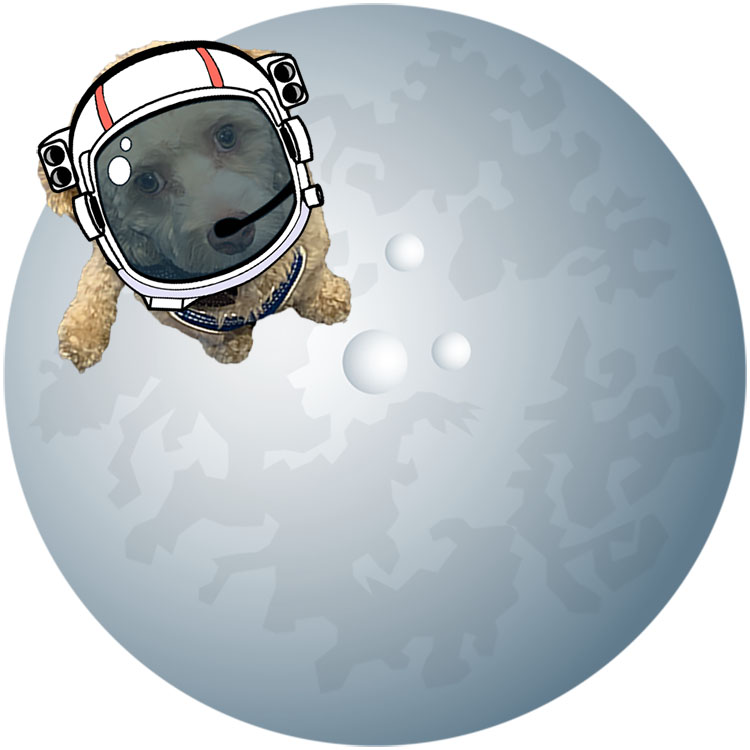

Dear Diary,
Today was my first day in space. I was riding in my mom's rocket ship and landed what I percieved to be the moon, but now I am not too sure. There is a strange man floating in front of me waving his hand...should I bark at him to say hello? I think I will have to wait and see. I miss my mommy.
Dear Diary,
I actually did land on the moon! My rocket ship did take a little beating on the landing but I made it! The man that was floating in front of me seems to have disappeared for now, I gave him a good growl, I think he got scared. I am starving, I need to start looking for some food, the freeze dried stuff is just not cutting it.
